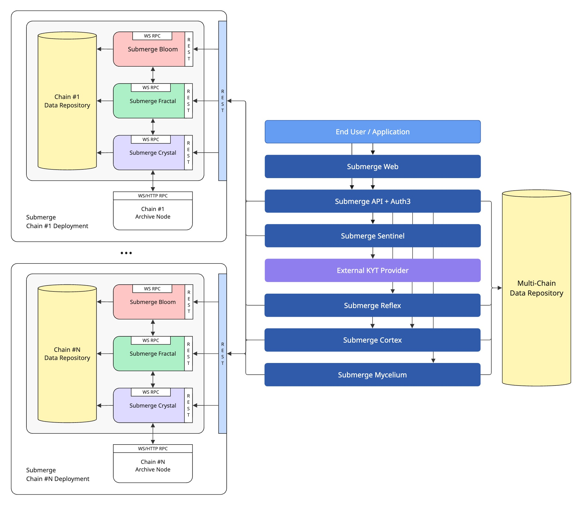

Progress Report No.1, 02.04.2025
0. TL;DR
- Alpha release due on the 19th of June, 2025.
- Project will be open-sourced on release.
- No major changes in architecture; additional components introduced.
- Two additional chains integrated, Astar and Acala, bringing the number of supported chains to 21.
- Development work completed for bottom-layer indexing and KYT integration; ongoing for the rest of the components.
- KYT integration with the first provider completed.
- Design work completed for branding; UX/UI design and web application development in progress.
1. Introduction
The project's planned start date of the 1st of November, 2024 was delayed to the 2nd of December, 2024 due to a number of factors,
including a review and basic testing of the architectural model, coordination with the design team abroad and their relocation
for the intensive kick-off work, and the validation of the infrastructure requirements.
This document outlines the architectural changes we made to the initial design, the challenges we have faced so far, our progress across different components of the system, the project timeline, and the current budgetary status.
This document outlines the architectural changes we made to the initial design, the challenges we have faced so far, our progress across different components of the system, the project timeline, and the current budgetary status.
2. Architectural Changes

The Submerge Indexer was broken down into four separate components:
-
Submerge Crystal
Indexes the complete history of all state changes in all chains in raw binary format. Deployed per chain. -
Submerge Fractal
Processes the output of Submerge Crystal to index selected storage items into a queryable format. Also indexes data related to state transitions, such as block headers, extrinsics, events, etc. Supports backfilling. Deployed per chain. -
Submerge Bloom
Transforms the output of Submerge Fractal into queryable relational models, as defined by DSL specifications. Supports backfilling. Deployed per chain. -
Submerge Mycelium
Processes data from all deployed chains to index and track cross-chain data (XCM). Single deployment.
Other changes include:
- Submerge Analyst, the component that hosts and executes data analysis algorithms, is now called Submerge Cortex.
- Submerge Real-Time Analytics, the component responsible for real-time analysis of multi-chain state, is now called Submerge Reflex.
3. Challenges Faced
The main challenge we have faced so far has been the data storage requirements. Submerge processes the data in multiple layers,
each requiring its own storage and contributing to the overall footprint.
Most of the storage needs to be kept on NVMe hard drives to ensure fast access for analysis, which significantly increases infrastructure costs. To avoid exceeding budget, we recently ordered two high-grade, storage-focused servers to augment our current owned-hardware colocation setup. Details of this order can be found under the Expenditures and Budgetary Status section.
Estimated data requirements for the relay, system and parachains are as follows:
We do not currently face any unsolved computational challenges, but we are experiencing issues with some RPC calls on Mythos. This issue is under investigation.
Most of the storage needs to be kept on NVMe hard drives to ensure fast access for analysis, which significantly increases infrastructure costs. To avoid exceeding budget, we recently ordered two high-grade, storage-focused servers to augment our current owned-hardware colocation setup. Details of this order can be found under the Expenditures and Budgetary Status section.
Estimated data requirements for the relay, system and parachains are as follows:
| Polkadot | 24.0 TB | Kusama | 29.5 TB |
| Asset Hub | 2.1 TB | Asset Hub | 2.2 TB |
| Bridge Hub | 1.4 TB | Bridge Hub | 1.2 TB |
| Coretime | 0.2 TB | Coretime | 0.4 TB |
| People | 0.3 TB | People | 0.6 TB |
| Collectives | 1.0 TB | ||
| Acala | 2.1 TB | Bifrost | 1.1 TB |
| Astar | 5.0 TB | Moonriver | 10.0 TB |
| Bifrost | 1.7 TB | ||
| Centrifuge | 1.4 TB | ||
| Hydration | 2.1 TB | ||
| Hyperbridge | 1.2 TB | ||
| Moonbeam | 14.2 TB | ||
| Mythos | 3.4 TB | ||
| POLKADOT TOTAL | 60.1 TB | ||
| KUSAMA TOTAL | 45.0 TB | ||
| TOTAL | 105.1 TB |
We do not currently face any unsolved computational challenges, but we are experiencing issues with some RPC calls on Mythos. This issue is under investigation.
4. Progress by Component
Architecture Review & Validation
100%
Infrastructure Research
100%
Branding
100%
Submerge Crystal
100%
KYT Integration (Merkle Science)
100%
Submerge UI Framework
85%
Submerge Fractal
75%
Infrastructure Deployment
65%
UX/UI Design
60%
Submerge Bloom
40%
Submerge Sentinel
40%
Submerge Mycelium
35%
Submerge Cortex
35%
Submerge Reflex
30%
Submerge Web Application
20%
Submerge Auth3
10%
Deployment
10%
Submerge API
5%
5. Timeline
The alpha version of Submerge is going to be fully open-sourced and released on the 19th of June, 2025.
Detailed architecture, build, and deployment documentation will be included in the alpha release.
6. Expenditures and Budgetary Status
A list of all expenditures made so far and the amounts due is provided below:
All invoices for the above expenditures will be published alongside the alpha release in June 2025.
| Item | Total Paid (USD) | Total Due (USD) |
| Branding, UX and UI Design | 16,800.00 | 18,200.00 |
| Bare-Metal Cloud Services (Temporary) | 5,900.00 | - |
| Hardware | 58,164.00 | - |
| KYT License - Yearly | 12,000.00 | - |
| Management & Development | 56,000.00 | 42,000.00 |
| TOTAL | 148,864.00 | 60,200.00 |
All invoices for the above expenditures will be published alongside the alpha release in June 2025.
7. Conclusion
We are continuing work on the design, architecture, and development of Submerge with great enthusiasm.
We look forward to sharing the end product with the community, and advancing the platform through
continued development.
For any questions or inquiries, please reach out to us at info@helikon.io.
For any questions or inquiries, please reach out to us at info@helikon.io.